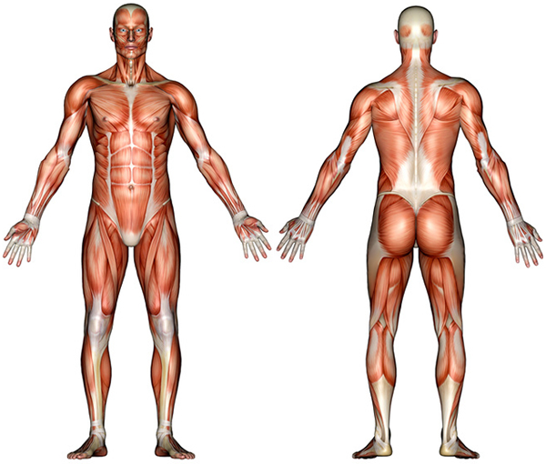

WORKOUT AND STAY FIT!!

Abdomin
Thighs
Biceps
Calves
Chest
Forearm
Glutes
Lats
Lower Back
Middle Back
Neck
Shoulders
Triceps
Select your Level of Expertise and Choose a Body Part
Beginner Level Workouts
Intermediate Level Workouts
Expert Level Workouts